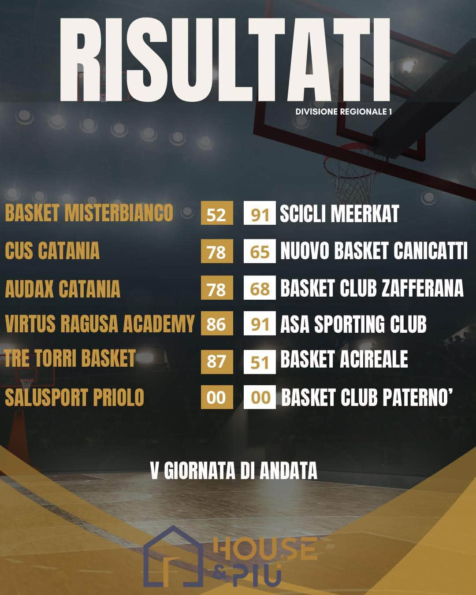
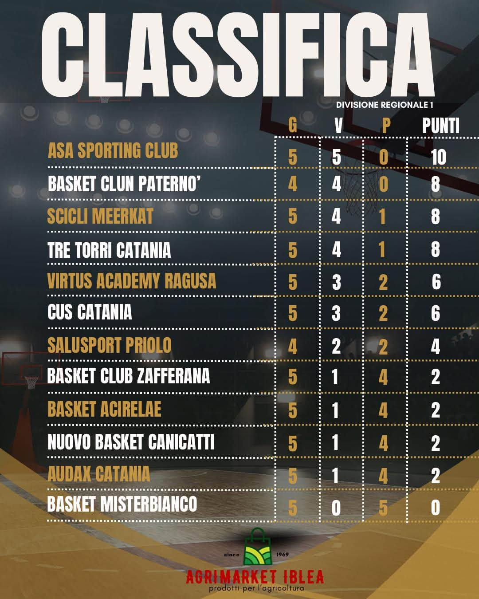

Con le vittorie contro la capolista Tre Torri e a Misterbianco, la Meerkat sale al terzo posto a quota 8, insieme a Basket Club Paternò e Tre Torri Catania. In vetta resta l'ASA Sporting Club, a punteggio pieno con 10 punti dopo il colpo sul campo della Virtus Ragusa Academy.
Anche Paternò è ancora imbattuto, con una partita in meno: la sua gara della quinta giornata contro la Salusport Priolo non è ancora stata disputata.
| Basket Misterbianco | 52 – 91 | Scicli Meerkat |
| CUS Catania | 78 – 65 | Nuovo Basket Canicattì |
| Audax Catania | 78 – 68 | Basket Club Zafferana |
| Virtus Ragusa Academy | 86 – 91 | ASA Sporting Club |
| Tre Torri Basket | 87 – 51 | Basket Acireale |
| Salusport Priolo | – – – | Basket Club Paternò |
| # | Squadra | G | V | P | Punti |
|---|---|---|---|---|---|
| 1 | ASA Sporting Club | 5 | 5 | 0 | 10 |
| 2 | Basket Club Paternò | 4 | 4 | 0 | 8 |
| 3 | Scicli Meerkat | 5 | 4 | 1 | 8 |
| 4 | Tre Torri Catania | 5 | 4 | 1 | 8 |
| 5 | Virtus Academy Ragusa | 5 | 3 | 2 | 6 |
| 6 | CUS Catania | 5 | 3 | 2 | 6 |
| 7 | Salusport Priolo | 4 | 2 | 2 | 4 |
| 8 | Basket Club Zafferana | 5 | 1 | 4 | 2 |
| 9 | Basket Acireale | 5 | 1 | 4 | 2 |
| 10 | Nuovo Basket Canicattì | 5 | 1 | 4 | 2 |
| 11 | Audax Catania | 5 | 1 | 4 | 2 |
| 12 | Basket Misterbianco | 5 | 0 | 5 | 0 |